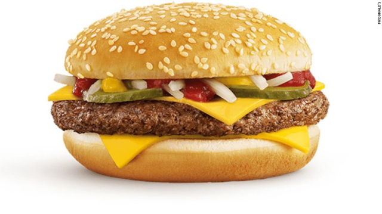
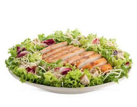

Johanna
Henry
Tarea de HTML / CSS
Aunque la cadena de comida rápida no es famosa por sus ensaladas,
cuentan con esta opción "saludable" en su carta. Si eres un fan de su ensalada César, puedes
replicarla en casa con esta receta, que es prácticamente igual (o mejor) que la del gigante
de las hamburguesas.
Link a MacDonalds Colombia
- Hamburguesa cuarto de libra

- Ensalada César
